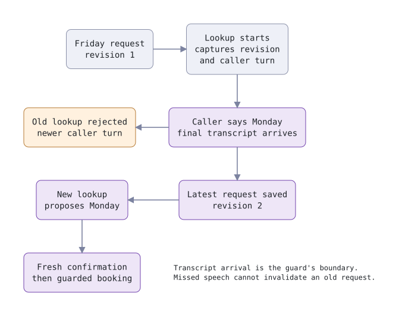
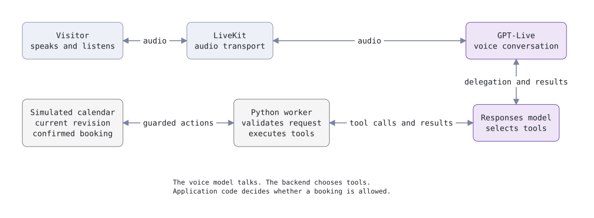

Article
GPT-Live with LiveKit: Beyond the First Working Call
Build a GPT-Live sales demo with LiveKit: separate voice and tool prompts, handle changed requests, guard simulated bookings, and measure both usage streams.
Build voice agents that handle interruptions, changing requests, and tools using GPT-Live’s thinking, commentary, and instruction controls.
A visitor wants a voice agent for five clinics. They ask to meet on Friday. While the calendar lookup runs, they add: “Actually, Monday. And include our engineering lead.”
The agent now has two jobs: keep up with the conversation and stop the old request from becoming the outcome. A fluent acknowledgement only solves the first.
This walkthrough uses an inbound sales demo with a simulated calendar. It collects a use case, checks illustrative slots, and asks for confirmation before recording one meeting in memory. It makes no real calendar or CRM writes. The final development smoke test used synthetic caller audio and reached a confirmed Monday slot. It also exposed why the application needs more than a prompt telling the model to respect corrections.
Key Takeaways
- Give the voice model conversation guidance and the backend model tool procedures.
- Use thinking for background facts, commentary for something to say, and instructions for ongoing guidance.
- Keep the current request and booking checks in application code.
- Test audible interruptions separately from tool outcomes, and collect voice duration separately from backend tokens.
Changing Requests
Treat a correction as a change to the task state. A lookup that started for Friday should carry enough identity for the application to recognise that it no longer answers the request.
The demo stores the visitor's need, preferred weekday, and attendee roles. Changing any of these increments a request revision and clears the previous offer. Each request update also records which finalised caller turn it processed in request_turn. Availability first requires that turn to be current, then captures the revision and turn before waiting.
This is the key check from the implementation:
turn = self.user_turn
if self.request_turn != turn:
return {
"status": "superseded",
"message": "Update the request from the latest caller transcript before looking again.",
}
await asyncio.sleep(delay)
if revision != self.revision or turn != self.user_turn:
return {
"status": "superseded",
"message": "Caller spoke again; check latest request.",
}
The turn counter advances on each finalised caller transcript. If a new transcript arrives while the lookup waits, its result is rejected even if the backend hasn't interpreted the correction yet. The backend must call update_request with the newer request before looking again. A retry using the old stored day is rejected even though it starts after the correction. In the recorded smoke, the backend attempted exactly that retry; this second check stopped it.
This proves an update occurred after the transcript. It cannot prove the backend interpreted that transcript correctly. That semantic boundary still needs conversation tests.
That is deliberately conservative. “Thanks” can invalidate the pending lookup too. For this small demo, doing another lookup is preferable to guessing whether a new utterance changes the appointment.
The boundary matters: this check observes transcript events, not the caller's intentions directly. If speech recognition misses “Monday,” the revision logic cannot recover a correction it never received. The WebRTC walkthrough follows the audio path that precedes this application decision.

How It Works
GPT-Live handles a conversation while delegated work runs. In the demo, a Responses backend selects tools and the LiveKit worker executes the Python functions. The application owns the booking state. These are separate responsibilities in OpenAI's GPT-Live architecture.

LiveKit exposes GPTLiveModel through an adapter that fits AgentSession. This excerpt shows the demo's session configuration; its prompts and assistant class are defined elsewhere in the example:
session = AgentSession(
llm=openai.realtime.GPTLiveModel(
voice="marin",
responses_options={
"model": os.getenv("SDR_BACKEND_MODEL", "gpt-5.6-luna"),
"instructions": BACKEND_INSTRUCTIONS,
"parallel_tool_calls": False,
"max_output_tokens": 600,
"reasoning": {"effort": "low"},
},
),
vad=silero.VAD.load(),
)
The example pins livekit-agents[openai,silero]==1.8.5. You need Python 3.11 or later, uv, LiveKit credentials, and an OpenAI project with GPT-Live access. The LiveKit plugin guide covers installation and authentication.
The demo source includes the assistant, booking state, and tests. It pins the published VoiceGateway 0.27.0 package for metering. From that directory, copy the environment template, add credentials locally, and start the console:
cp .env.example .env
uv sync
uv run agent.py download-files
uv run agent.py console
For a browser client, run uv run agent.py dev and dispatch the worker using the agent name talk-to-our-team. The simulated slots use weekday and time labels in America/Toronto; they aren't dated appointments.
Separate Prompts
Write the voice prompt around what the visitor experiences. Write the backend prompt around how the work proceeds.
The demo's voice instructions ask for short responses, one question at a time, and no private contact details. They tell the agent to delegate service-fit, availability, and booking requests, and to acknowledge slow work once. Greetings need no calendar lookup.
The backend instructions describe the procedure:
- Record the latest request with
update_request. - Check availability for that revision.
- Propose one returned slot and ask for a fresh confirmation.
- Call
book_meetingonly after that confirmation.
This split keeps the spoken experience understandable without omitting the tool procedure. OpenAI's delegation guide explains how the backend receives delegated work.
A prompt still cannot enforce a booking invariant. “Never book without confirmation” belongs in the backend instructions, but the function must also reject an invalid attempt. The demo has both: instructions that guide the model and checks that run when the model calls a tool.
Disabling parallel tool calls makes the intended sequence easier to inspect. It doesn't prove that a caller heard an offer or that every tool call uses the latest request. Those need their own evidence and checks.
Context Controls
Choose a context channel according to what the voice model should do with the information. The installed plugin exposes three methods on self.duplex_session:
| Method | Purpose | Example in this conversation |
|---|---|---|
append_thinking |
Supply background information | The lookup finished, but no meeting is booked. |
append_commentary |
Give the model something to say in its own words | Ask the visitor what they want to build. |
append_instructions |
Add guidance for the rest of the session | Do not request an email address in this demo. |
Here, “thinking” is application-supplied context. It isn't an interface for reading the model's private reasoning.
At startup, the demo appends the privacy instruction and the fact that appointments are simulated. It requests its greeting through session.generate_reply, which the installed adapter routes through commentary. After a successful availability lookup, it appends a brief status. A superseded lookup returns its rejection to the backend without adding another voice-side status:
if result["status"] == "available":
self.duplex_session.append_thinking(
f"Current calendar lookup is for {self.booking.day}. "
"No meeting has been booked. Wait for the backend's proposed slot."
)
That status gives the voice side context without asking it to announce another result immediately. The structured tool return supplies the backend with the actual slots or rejection.
The booking function returns its result through the backend and doesn't append the same result as commentary. Sending both would create two paths for announcing the outcome. Keeping one announcement path makes repeated speech easier to investigate.
Each append has a 500-token limit in this plugin, so keep the payload focused on the next decision. The methods queue their appends without waiting. An append acknowledgement concerns context injection; it doesn't establish that the caller heard a sentence. Keep context acknowledgement and audio playback as separate events when instrumenting the session.
Running Tools
Design tool results so the next step follows from an explicit status. The demo's availability function returns available or superseded. Proposing a valid slot returns awaiting_confirmation. Booking can return needs_confirmation, rejected, booked, or already_booked.
Those distinctions matter during a conversation. “The function returned” doesn't tell the agent whether it may announce a meeting.
The confirmation function checks that the supplied revision is current, that the slot came from the offer and matches the proposal, and that a newer caller turn contains a standalone confirmation. “Yes, but Monday instead” doesn't match the demo's confirmation pattern. It needs another request update.
A delegated booking call can also arrive before LiveKit finalises the caller transcript. The async tool waits up to three seconds for a newer caller event, then runs the same confirmation checks. If no qualifying transcript arrives, it refuses to book. Tool arguments are never accepted as evidence of consent.
Once a simulated booking exists, subsequent attempts return the existing record. They don't create another meeting or silently change the first one. That protects the in-memory demonstration from a repeated booking call.
A real calendar needs more. Persist an operation identifier, use provider-side idempotency where available, and verify the authoritative result after a timeout or reconnect. A worker's memory cannot establish whether an external service completed a request before the connection failed.
Two further checks close gaps around the proposal. A newer caller turn after lookup completion prevents that result from being proposed. After a proposal, any transcript that is not a standalone confirmation clears it, so a correction followed by a later “yes” cannot confirm the old proposal. These rules still depend on transcript events and do not prove exact offer playback.
Handling Interruptions
An interruption affects speech playback and application work on different timelines. Stopping an audible reply doesn't establish that a pending lookup or booking has been cancelled.
GPT-Live decides its own conversational turns. LiveKit can stop local playback while the model continues until it stops itself, as the plugin's interruption guidance explains. The demo includes VAD for that local playback path. Use turn-detection evaluation to separate detecting speech from deciding that a conversational turn has ended.
For the Friday-to-Monday scenario, inspect three separate observations:
- Did the old speech stop when the caller began correcting it?
- Did a finalised transcript contain the correction?
- Did the lookup and eventual proposal use the updated request?
A pleasant-sounding call can fail the third check. A correct booking record can coexist with an awkward interruption. Saving only the final transcript hides part of both problems.
The demo adds a two-second lookup delay so there is time to try a correction while work is pending. SDR_LOOKUP_DELAY=0 removes it. This is a test control, not a measurement of model or calendar latency.
Conversation Memory
Keep conversation context and business state separately inspectable. The transcript records conversational turns; the booking object records the current request, available slots, proposal, and result.
GPT-Live supports appending context during a session. OpenAI's session guide describes that lifecycle. In LiveKit, the three context appends don't appear in session.history, so a transcript export alone cannot reconstruct every instruction or fact the application supplied.
For a useful diagnostic record, log request revisions, tool arguments and statuses, and deliberate context appends alongside the transcript. Record why an offer was invalidated. Redact private data and avoid collecting details the demonstration doesn't need.
This also helps distinguish intent from delivery. A proposal stored in application state shows what the agent was meant to offer. It doesn't prove the caller heard the exact slot. If your product requires that evidence, connect the proposal to the relevant speech and playback events instead of treating a tool return as proof.
API Surprises
Check the layer when copying a default or limitation. The API, LiveKit adapter, and application don't expose identical controls.
| Detail | Consequence for this demo |
|---|---|
| LiveKit defaults to Responses delegation; the direct API's omitted delegation selects client mode. | Set or verify delegation when porting configuration. |
| The plugin restricts replacing instruction sets after startup. The API supports updates to supported backend settings. | Treat the plugin restriction as version-specific. Use supported context appends for standing guidance here. |
| Client delegation has no ordinary function-tool execution path. | Keep Responses mode for this example. |
The first two distinctions are documented across session management, delegation, and the plugin guide.
There is also a concrete documentation mismatch to watch: the guide describes a warning for registered function tools in client mode, while the installed Python 1.8.5 implementation raises RealtimeError. If you choose client mode, leave registered tools empty and handle delegation events yourself. Pinning the version makes this behaviour reproducible.
Measuring Results
Collect the voice session and backend work as separate usage streams. On October 5, 2026, the GPT-Live 1 model page lists voice pricing at $0.05 per minute, billed per second, with backend model and tool charges additional. That is a voice-session rate, not the total cost of a call.
The installed plugin converts cumulative provider seconds into incremental session_duration metrics. Sum those increments once. Preserve session and event identity so a retry in your collector doesn't count them twice, and collect the final usage emitted during close.
Backend token metrics need their own model identity. Don't label every event with the voice model's name simply because both streams pass through the same session.
Keep a record of the measured quantity, model, unit, rate source, and whether pricing is complete. An unknown backend rate should produce an incomplete estimate. Zero token counts on a duration-based voice event don't mean that part of the call was free.
The plugin also uses ttft=-1 when that measurement is unavailable. Exclude it from latency calculations. Measure an actual interval, such as the time from a recognised correction to the first audible acknowledgement, before reporting response latency.
The synthetic audio smoke used the public voicegateway.attach(session, ...) integration. Its recorded provider usage and estimated costs were:
| Item | Recorded quantity | Estimated USD |
|---|---|---|
| GPT-Live voice session | 53 billable seconds | $0.04416667 |
| GPT-5.6 Luna backend | 18,265 input; 549 output tokens | $0.00353689 |
| Combined provider estimate | Voice plus backend | $0.04770356 |
The input total includes 5,697 cached reads and 5,011 cache writes, leaving 7,557 ordinary input tokens. The GPT-5.6 Luna pricing page lists $0.20 per million input tokens, $0.02 for cached input, and $1.20 for output, with cache writes charged at 1.25 times the ordinary input rate. The estimate therefore prices cache writes at $0.25 per million, rather than charging all non-cached input at the same rate. The 257 reported reasoning tokens are already included in the 549 output tokens; adding them again would double-count them.
These are rate-based estimates from one run, not an invoice reconciliation. They exclude caller-audio generation, hosting, transport, and any other deployment costs. The duration collector included the final six-second increment at shutdown. Unavailable time-to-first-token values remained unknown rather than becoming zero-latency observations.
The VoiceGateway metering changes shipped in version 0.27.0, which this example pins. A clean install of that published package passed the demo's offline tests. The recorded native smoke used the same metering implementation before release; it did not test a hosted service.
Download the synthetic call trace to inspect the final state, tool outcomes, and individual usage records. Internal request identifiers have been removed. This is one development run, not a representative sample of callers.
Real Conversation Tests
Use offline tests to prove state transitions, then use recorded conversation tests to examine the path into those transitions. The demo has 16 passing offline tests: 14 state cases, including parametrised cases, and two async tests for the final-transcript race. VoiceGateway has 58 passing focused tests; its full local suite recorded 3,916 passed, 25 skipped, and two expected failures. These counts describe development checks, not a reliability rate.
Run the demo tests from its directory:
uv run pytest -q
The seventh native development run fed synthetic caller audio into a real GPT-Live session through LiveKit's AgentSession, with Responses delegation and the public metering attachment. It began with a request to meet the technical lead on Friday, corrected the day to Monday morning, and ended with the in-memory booking SIM-001 for Monday 10:00 in Toronto time.
| Elapsed event time | Observed event |
|---|---|
| 15.78 s | Finalised caller transcript changes Friday to Monday morning. |
| 18.98 s | Original availability lookup returns superseded. |
| 20.87 s | Retry without an updated request is also rejected. |
| 28.98 s | Request update records Monday as revision 2. |
| 35.45 s | Tool proposes Monday 10:00. |
| 48.58 s | Finalised caller transcript contains “Confirm”. |
| 51.62 s | Booking tool returns the simulated Monday meeting. |
These are event times from one development trace. They are not audible response-latency measurements. The test used a deliberate five-second lookup delay and synthetic input; it did not exercise a LiveKit room, browser, telephone connection, or hosted deployment.
Earlier development runs failed to complete the intended flow or produced a stale proposal. That prompted changes to the guards and transcript handling. The successful seventh run demonstrates the final path once; it does not establish seven-run reliability, general speech-recognition accuracy, or proof that a human heard the complete offer.
Extend this test with a correction after lookup completion, “yes, but Monday instead,” silence after an offer, repeated confirmation, and a disconnect during work. For each run, compare what was spoken, what was transcribed, which revision each tool used, and the final simulated booking.
Record the package version, prompts, model settings, and test input with the outcome. As with a benchmark smoke run, a successful execution is only useful evidence when you know what it exercised. The useful next test takes the same correction through the actual client and checks playback as well as state, while retaining the tool and usage evidence that made this failure visible.